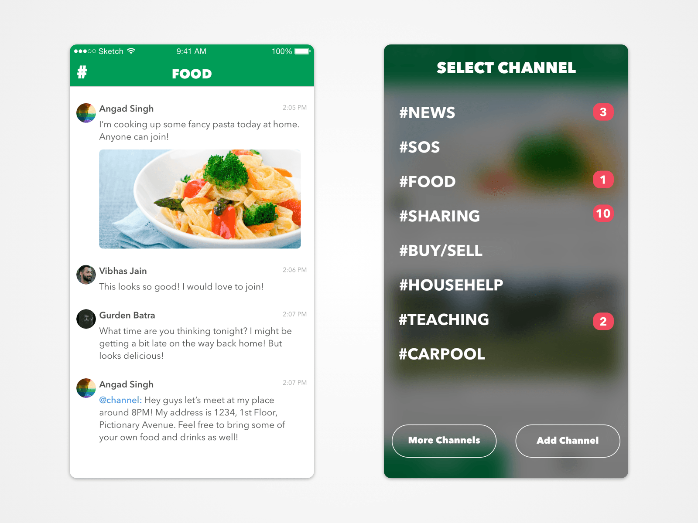

Pipal was one of my first projects when I joined Housing Labs.
For typical Housing.com users, after finding a house on the app, they had no reason to keep using our app. We tried to figure out a way to retain house buyers within the Housing ecosystem and keep offering them the best experience possible.
After exploring a lot ideas, I finally narrowed down on a simple use case, what if we had a Slack for Neighbourhoods?
This led me to one of my initial explorations of Pipal

You can definitely see the resemblance to Slack. And that was the problem with this iteration. I don't want a neighbourhood Slack to get messy like my work Slack! That's what I hate about Slack in the first place. There's an information overload problem.
My team and I narrowed down on a basic set of four channels that cover most topics of communication that a neighbourhood app would require, finding the perfect balance between segregation of information and clutter.
Each channel is represented by a color, which makes it easily recognizable. All of this in a simple swipe based interface that changes the color on swiping, indicating which channel you are currently browsing.
I worked on the Development of Pipal on both iOS and Android. While developing Pipal I used Swift 2. Coming from Objective-C, Swift was a beautiful language to work with and I haven't gone back since!
One of the features that I focused heavily on was Data Persistence. And for that I ended up using Realm for Android. I used a Fetched Results Controller to auto populate the feed on iOS. After doing that on iOS I replicated a similar architecture on Android as well ensuring consitency in performance.
The following video has been taking from a developed build of the application including all the interactions and animations!
Although a lot of work was put into this app, the project was scrapped by the upper management due to reasons I don't know.